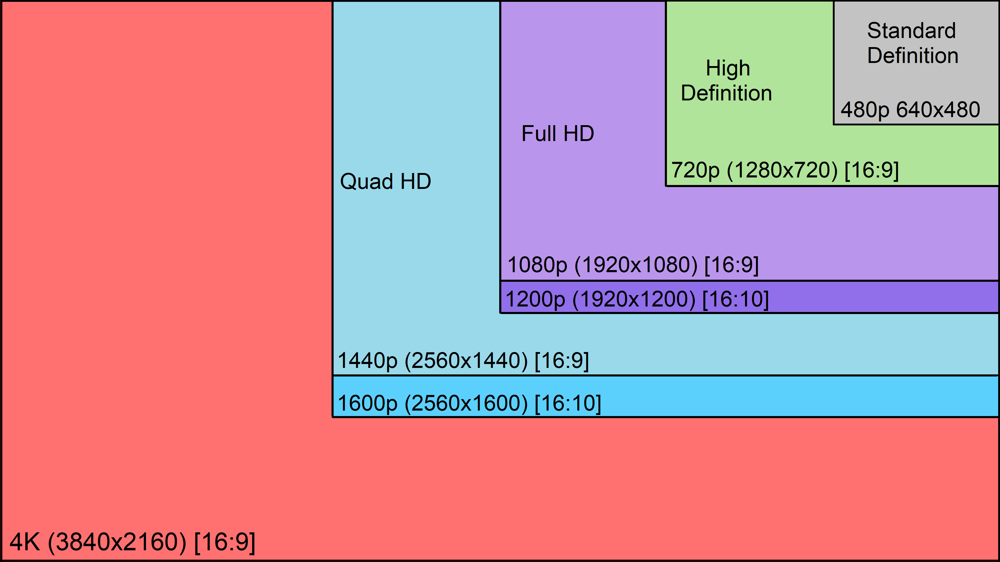

这节课由两个 guest lecturers 分别介绍：
- 视频拍摄
- 视频后期
视频拍摄
ISO
拍摄视频时，永远不要开启自动 ISO，否则视频会出现忽然变亮或变暗的情况，给后期带来很大的困扰。
Shutter Speed vs. Frame Rate
在拍摄视频时，shutter speed 和 frame rate 常常要合并起来考虑。前者指的是视频中每一帧画面曝光的时间；后者指的是视频中每秒包含的帧量 (的倒数)。快门时间与 frame rate 的组合共同决定视频的观看体验。
根据电影业的历史实践经验，当每秒由 24 帧画面构成时，人眼会觉得画面是流畅的，更多的帧数不会带来流畅度的提升。另外一个经验法则是所谓的「The 180-degree rule」，即当 frame rate 是 shutter speed 的两倍左右时，画面的观感对人来说是最自然的。当然，实践中，以更高的帧率拍摄除了让每帧画面更加清晰，还可以给视频后期剪辑留下空间。更具体的介绍可以观看下面这个视频：
既然对于人眼来说 1/24 的 frame rate 已经足够流畅，为什么我们总还能在消费市场上听到 60 frames per second (FPS) 这样的概念？助教举了 2 个例子：
- 电子游戏：电子游戏的控制是以 frame 为单位，有些游戏 1/24s 的精读还无法满足玩家的要求
- 后期剪辑：为后期剪辑留下后门，比如可以选择任意片段制作慢放效果
Resolution & Apsect Ratio
| Commonly Called | W | H | Frame Rate |
|---|---|---|---|
| High Def 1080P | 1920 | 1080 | P or I |
| High Def 720P | 1280 | 720 | P or I |
| Standard Def 480P | 640 | 480 | P or I |
| 4K Ultra High Def | 3840 | 2160 | P |

如今最常见的视频清晰度和宽高比如上表和上图所示。其中 1080P、720P、480P 中的数字指的是视频高度，而 4K 指的是视频宽度。P 指的是 progressive，视频播放时每帧都是完整的画面；I 指的是 interlaced，视频播放时每帧都只加载一半的像素，用以节省带宽。但现在 interlaced 已经很少使用，未来将逐渐淡出我们的视野，在最新的 4K 标准中，已经不再支持 interlaced 类型的 frame rate。
1080P 已经达到了人眼的感受边界，更高的清晰度对于人眼来说没有太大的意义，而且更高的分辨率意味着更多数据需要存放、运输、编辑，那为什么还需要拍摄 4K 视频？理由之一和超过 24 FPS 类似，可以让剪辑师在后期留下空间，如裁剪、重新构图等。
对焦
在拍摄视频的时候，一定要通过「zoom in」按钮放大画面，确保被摄主体合焦。免得在后期的时候捶胸顿足。
时间
视频和照片拍摄的另一区别在于视频多了一个时间维度。基于此会有一些视频的表现技法，比如 pull focus：
要精准地将焦点从物体 A 移动到物体 B，有很强的技巧性，practive makes perfect。
镜头类型
Establishing
Establishing shot 在引入新场景，如电影开场，或者交代事件发生地点的时候使用：
Wide
Wide shot 包含一个和多个人物的全身信息，也被称为 long short 或 full shot。通常被用来交代空间关系，如人物之间的距离：
Medium
Meidum shot 包含一个人物腰以上的部分：
Close-up
Close-up shot 包含一个人物的脸，通常用来：
- 表达重要的情绪
- 展现故事重要的瞬间
- 刻画人物表情变化
- ...
Extreme Close-up
Extreme close-up shot 包含一个人物脸上的某一部分，功能上与 close-up shot 类似，但更具张力：
音频
不要使用相机内置的麦克风，请使用外置的录音工具。
SD 卡
拍摄 1 分钟 1080P 的视频大约需要 1GB 存储空间，此外 SD 卡还需要具备足够的吞吐能力，综上所述建议携带大于 64GB 的 Class 10 SD 卡。
视频后期
后半节课介绍了如何使用 Adobe Premiere 制作视频，这里仅罗列一些功能点：
- Photo slideshow with music (with rhyme)
- Sync audio
- Time lapse
需要的时候，建议直接看教程系统地学习。